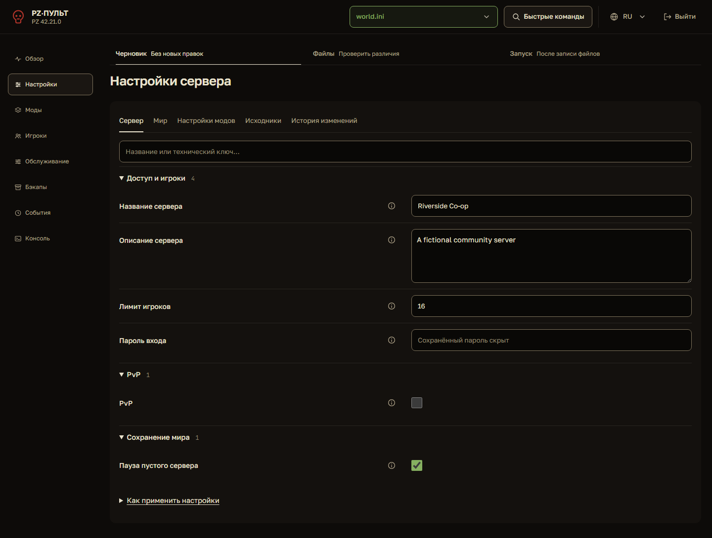

world.ini
В макете проработаны четыре ключевых экрана. Аудит охватывает все восемь разделов.
Снимок текущего кода на тех же вымышленных данных. Предложенный макет — ниже.

Запись без рестарта доступна при остановленном сервере.